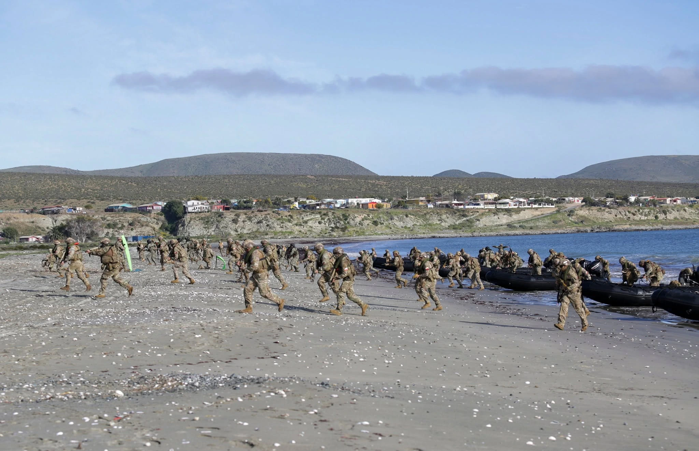

[Publication name] ·
Article title goes here
A short subtitle introduces the subject and gives the reader a reason to continue.
Read the original at [Publication name]
The opening paragraph introduces the central question and states the article's argument. Replace this text with the published introduction.
Use regular paragraphs for the main text. Add links to supporting material where useful, and use numbered footnotes for source details or qualifications that would interrupt the argument.1
First section heading
Develop the first part of the argument here. Each section should introduce its subject before moving into the evidence or examples that support it.
Continue with as many paragraphs as the material requires. Use italics for emphasis or publication titles, bold text when appropriate, and descriptive links for sources.
Supporting argument
Use a subsection when a part of the analysis needs its own heading. Keep the heading hierarchy in order so readers can follow the structure.
A specific detail
Use this level for a narrower point within the subsection. Add another footnote reference where a claim needs a citation.2
Insert the quoted passage here, preserving the source's wording and punctuation.
[Author], [source title]
Final section heading
Complete the article's argument here. Replace the sample headings and paragraphs with the article's own structure and text.
Footnotes
- [Author], [Source title], [publication], [date]. View source.↩
- [Second source or explanatory note]. Include the source details needed to locate the material.↩